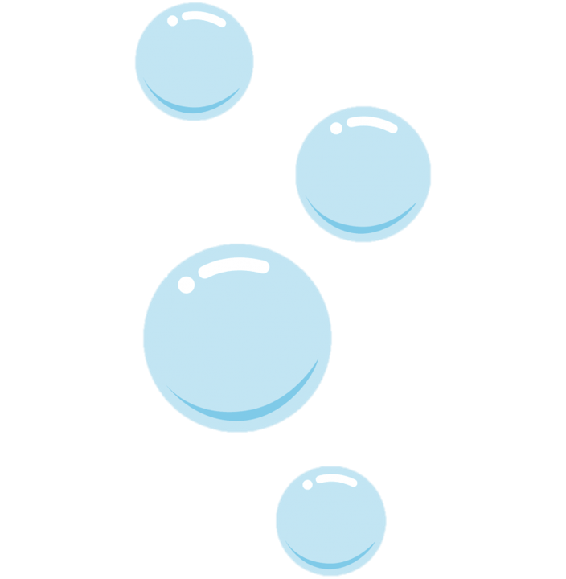
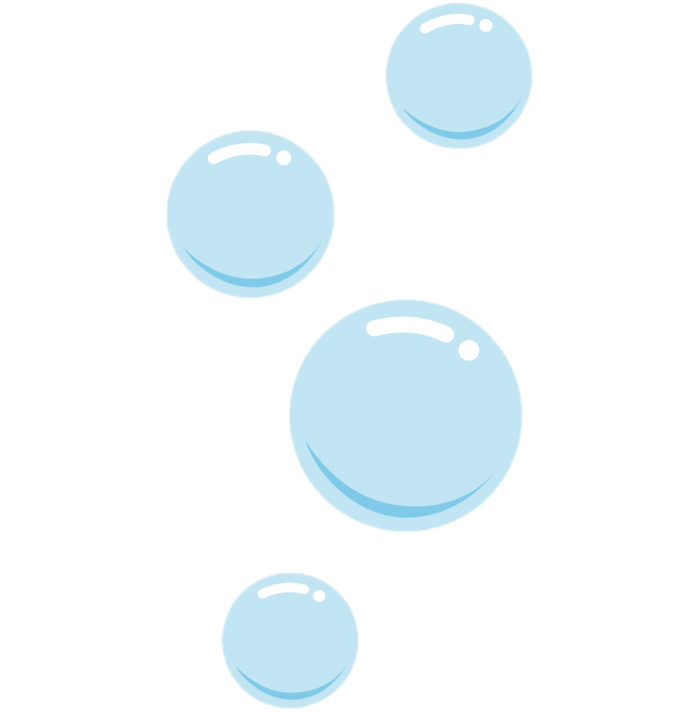
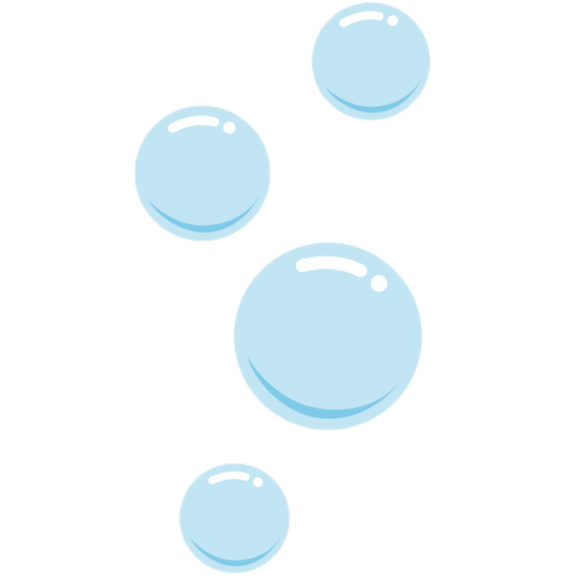
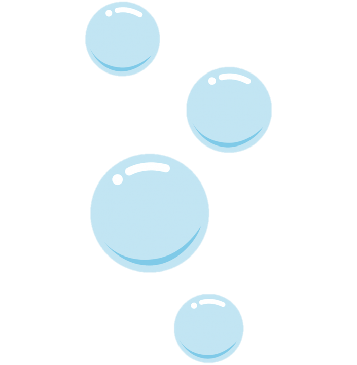
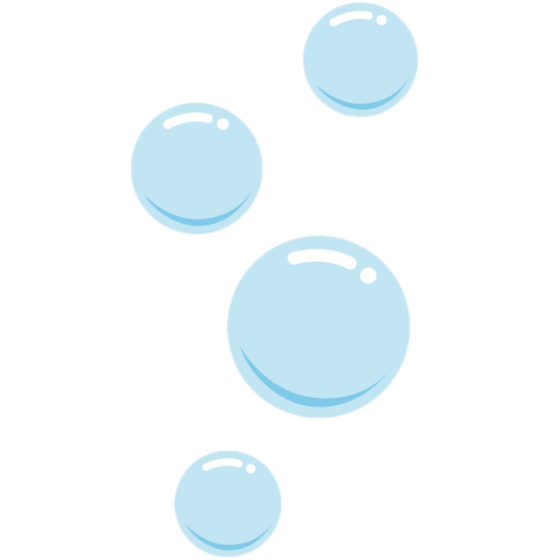

Anem-One
Ca part dans tous les sens.
 

Ca part dans tous les sens.


Complètement perméable, l'Anem-One est la référence pour garder un style inimitable, et ceci même à vingt-mille lieues sous les mers.
C’est grâce à une unité Air-Sole encapsulée que les Anem-One offrent une telle classe à chaque brasse. La semelle extérieure affiche en outre des motifs circulaires qui assurent un aquaplanning durable.
Dévelopée par une équipe d'experts Bloub-bloub, la Anem-One se décline en deux versions : Anem-Ona et Anem-On. Chacun trouvera chaussure à sa tentacule !
© Covida.